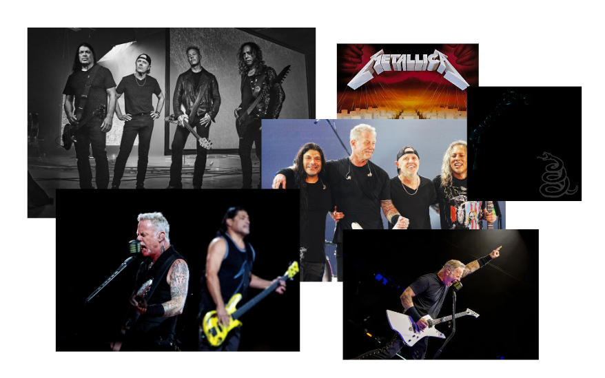

some music/artists that have been stuck in my head lately + desc
especially 狂感できない / 八十八ヶ所巡礼
okay, i’ve liked this band’s music since i’ve founded them but i got too lazy trying to find more songs about them cause none of them were on spotify (only 3 are sigh). that was, that was until i clicked on a yt short that had a bass cover of kyokan dekinai of the opening. it’s so good and amazing and you should definitely give it a listen!!!
other songs that i like
more specifically 3 songs and the marching band ver. LOL songs kind of get stuck in your head once you listen to them like a bajillion times
marching band ver
the real ver played by metallica are really nice too and both help me remember the melody
only one song though :P i can’t/am too lazy to find others. also i think this band died for a while but came back recently so that’s very cool. SHEEK-WASSA still really good and i like the style. i’ll definitely look into it more when i have the motivation to search!!